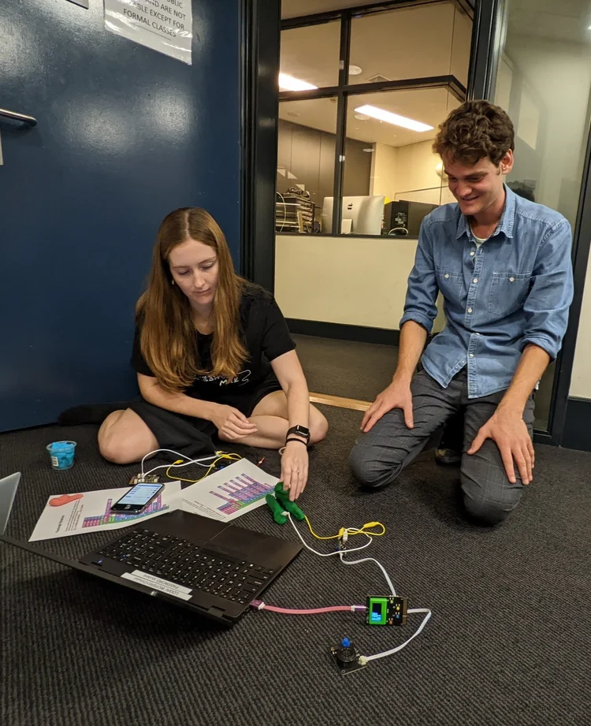
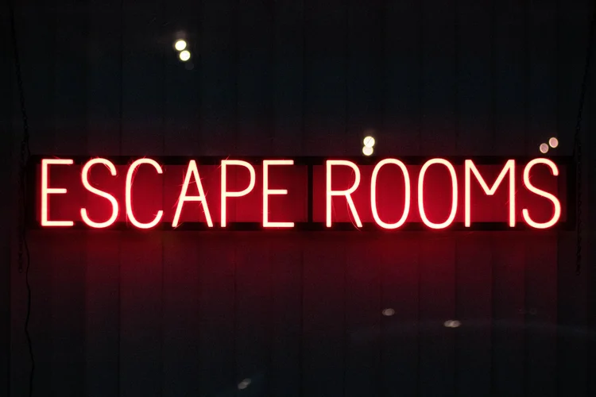

Location: Presbyterian Ladies' College Sydney

ConnectEd Code is delivering two huge events this year for PLC Sydney (in Croydon). I'm looking for ~20 staff to help at each event. Event 1, in May, is a Murder Mystery solved with code, so it'll be a lot of fun!
Event 1 is right around the corner (4 weeks away) so we're very keen to hear from anyone who wants to be involved.
If you are keen or have questions don't hesitate to get in touch!
Tutors will be paid between $30 and $45 an hour depending on the role you're in and your experience level.
If you're interested in the job opportunity please fill out this form.
You can also email renee@connectedcode.org to ask questions.
If you're interested in being involved in one or both of those, then you should come along to the info and learning session. (May 5th: 5.30–7pm)
If you can't make the session, but do want to be involved for Event 1, please email me.
The purpose of the session is:
Preferable skills:
Most positions will be given to people who can make all 3 days of an event.

A three day event during school hours (Monday–Wednesday) where we'll be teaching all of Year 7 (185 girls) coding, themed around a Murder Mystery.
We'll be using Kookaberries for the event, which are very similar to Micro:Bits. Across the three days, they will use moisture sensors, altitude sensors, neopixel lights, and radios to complete various tasks. We've created simple libraries for the kids to use to make the code easy to write (this will be their first experience with text-based coding). We'll also be using tools like Excel to graph data, and doing unplugged activities (like solving ciphers) to help uncover the mystery at hand!
Roles: Classroom leader — delivering lectures, keeping the class on track, managing the Kookaberry kits. Classroom helper — helping students debug their code, plug their Kookaberries together correctly.
Classrooms will have ~20–25 girls working in pairs, 1 leader and a few helpers.
A three day event during school hours (Monday, Tuesday, Thursday) where we'll be teaching all of Year 8 (160 girls) coding in a fun "build an escape room" theme.
On day one students will have classes on how to use various components, like radio, lights, buttons, etc.
On days 2 and 3 students will work in teams to create a small scale escape room prototype using the knowledge they gained on day 1, with ciphers, keys, locks and hidden messages to design and build a themed escape room.